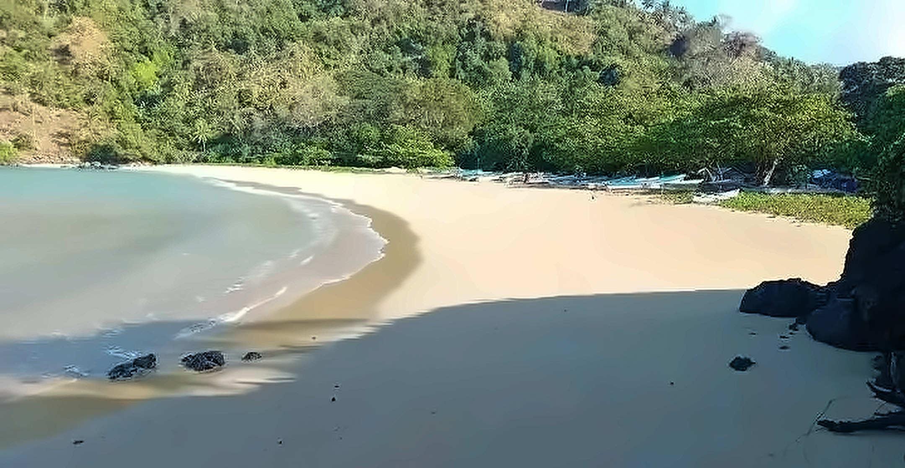

MoheliGoTRAVERSÉES MARITIMES
AVIS DE SERVICE
OUROVENI · CHINDINI · HOANI · FOMBONI
OUROVENI · CHINDINI · HOANI · FOMBONI
MER AGITÉE · AVIS AUX VOYAGEURS
AUJOURD’HUI,ON RESTE À QUAI.
La mer est agitée. Les vedettes ne sortent pas.
Tu le sais avant de descendre au port.
CE QUE ÇA CHANGE POUR TOI, POINT PAR POINT
Ne descends pas au port pour rien.
- Si tu as un billetTu ne perds rien. Changer la date est gratuit, et tant que la traversée n’est pas partie tu peux être remboursé.
- Quand ça reprendOn ne le sait pas encore — ce n’est pas nous qui décidons, c’est la mer. Écris-nous, on te dit ce qu’on sait le jour même.
ÉCRIS-NOUS POUR ÊTRE PRÉVENU
WHATSAPP +269 479 43 28moheligo.com